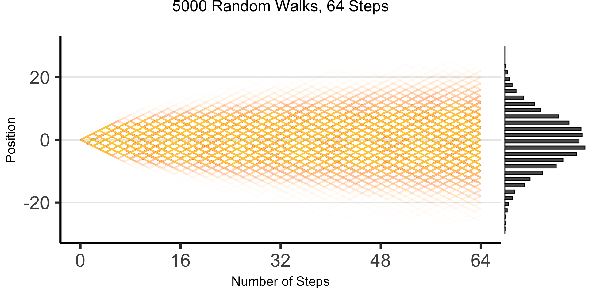

Week 6: Moments and Covariance
DSAN 5100: Probabilistic Modeling and Statistical Computing
Section 03
Tuesday, October 1, 2024
The Emergence of Order
- Who can guess the state of this process after 10 steps, with 1 person?
- 10 people? 50? 100? (If they find themselves on the same spot, they stand on each other’s heads)
- 100 steps? 1000?

[Recall] Discrete Uniform Distribution
Code
library(tibble)
bar_data <- tribble(
~x, ~prob,
1, 1/6,
2, 1/6,
3, 1/6,
4, 1/6,
5, 1/6,
6, 1/6
)
ggplot(bar_data, aes(x=x, y=prob)) +
geom_bar(stat="identity", fill=cbPalette[1]) +
labs(
title="Discrete Uniform pmf: a = 1, b = 6",
y="Probability Mass",
x="Value"
) +
scale_x_continuous(breaks=seq(1,6)) +
dsan_theme("half")
Exponential Distribution
- Recall the (discrete) Geometric Distribution:
Code
library(ggplot2)
k <- seq(0, 8)
prob <- dgeom(k, 0.5)
bar_data <- tibble(k, prob)
ggplot(bar_data, aes(x = k, y = prob)) +
geom_bar(stat = "identity", fill = cbPalette[1]) +
labs(
title = "Geometric Distribution pmf: p = 0.5",
y = "Probability Mass"
) +
scale_x_continuous(breaks = seq(0, 8)) +
dsan_theme("half")
Now In Continuous Form!
Code
my_dexp <- function(x) dexp(x, rate = 1/2)
ggplot(data.frame(x=c(0,8)), aes(x=x)) +
stat_function(fun=my_dexp, size=g_linesize, fill=cbPalette[1], alpha=0.8) +
stat_function(fun=my_dexp, geom='area', fill=cbPalette[1], alpha=0.75) +
dsan_theme("half") +
labs(
title="Exponential Distribution pdf: λ (rate) = 0.5",
x = "v",
y = "f_X(v)"
)
So What’s the Issue?
- So far so good. It turns out (though Paxton and Jeff don’t know this) the teams are both mediocre: \(H \sim \mathcal{N}(0,10)\), \(B \sim \mathcal{N}(0,10)\)… What is the distribution of \(R\)?
\[ \begin{gather*} R \sim \text{Cauchy}\left( 0, 1 \right) \end{gather*} \]
\[ \begin{align*} \expect{R} &= ☠️ \\ \Var{R} &= ☠️ \\ M_R(t) &= ☠️ \end{align*} \]

Even worse, this is true regardless of variances: \(D \sim \mathcal{N}(0,d)\) and \(W \sim \mathcal{N}(0,w)\) \(\implies R \sim \text{Cauchy}\left( 0,\frac{d}{w} \right)\)…
Avoiding Cancellation
- How to avoid positive and negative deviations cancelling out? Two ideas:
- Absolute value \(\left|X - \overline{X}\right|\)
- Squared error \(\left( X - \overline{X} \right)^2\)…
- Ghost of calculus past: which is differentiable everywhere?1

Visualizing 3D Distributions: Projection
- Since most of our intuitions about plots come from 2D plots, it is extremely useful to be able to take a 3D plot like this and imagine “projecting” it down into different 2D plots:

Adapted (and corrected!) from LaTeX code in this StackExchange thread
Visualizing 3D Distributions: Contours

From Prof. Hickman’s slides!